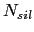
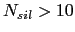
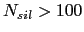

Next: Speaker Clusters Description and Up: Speech/Non-Speech Algorithm Previous: Model-based Speech/Non-Speech Decoder Contents
The hybrid Speech/non-Speech detector introduced here is composed of a 2 step process, as seen in figure 4.4, combining the energy-based detector and the model-based decoder presented above. The output of the energy detector is used exclusively to initialize the model-based decoder, whose output is used as the speaker diarization speech/non-speech input.
As described above, the functioning of the energy detector depends on setting a threshold value properly. In an exclusively energy-based system such threshold has to be defined using a development set as close as possible to the test set to obtain optimum results. By using a model-based decoding as a second step one can relax the need for a perfectly tuned threshold since the aim now is to obtain a rough distinction between speech and non-speech. The Energy detector is initially run with a very low threshold pair (1e-5/1e-6). While the number of non-speech segments found () is smaller than 10 the threshold pair is raised by an order of magnitude and the energy system is rerun (the system's computational requirement's are minimal).
This is done iteratively until ). At that point, if  it is considered that there are too many silence segments and a refinement step lowers the threshold pair, using a smaller threshold step size, until obtaining between 10 and 100 non-speech segments. The selection of the range (10 - 100) is defined a grosso modo in order to obtain a sufficient amount of silence frames to train the silence model in the model-based decoder with a low percentage of speech labelled as silence.
Such speech/non-speech segments are used to train the two models in the model-based decoder, which performs iterative Viterbi decodings and EM-ML training on the data until reaching likelihood convergence.
The use of two well known speech/non-speech detection techniques back-to-back allows for the creation of a more robust system than using either of them alone. On one hand, on a system totally energy-based it is found that the optimum thresholds defining the speech and non-speech segments are different from one recording type to another (as it depends on the room, microphones used, distance of the people to them, etc.) and therefore they need to be optimized using data from the same source, becoming very dependent on it. On the other hand, in a totally cluster-based system, there is a need for pre-labelled data in order to train the models (or somehow generated initial models), which is also very dependent on the type of recording. By using both systems any kind of data can be processed on its own, without the burden of similar data collection or annotation.
The proposed system is not parameter free. There are three main parameters that need to be determined in order to obtain optimum results. These are the minimum duration of the speech/non-speech in the energy-based detector, the number of Gaussian mixtures assigned to speech in the model-based decoder and the minimum duration of speech and non-speech in such decoder. These are though more robust to changes in the recording acoustics.
user 2008-12-08